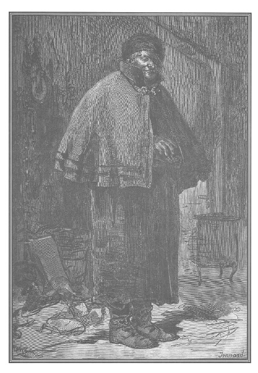

Ngõ hẹp Brasserie, một ngõ hẹp tối tăm và ít người biết tới, mặc dù ở trung tâm thành phố Paris, một đầu dẫn đến phố Traversière-Saint-Honoré, đầu kia dẫn đến bãi Saint-Guillaume.
Khoảng giữa đường phố nhỏ hẹp, ẩm ướt, lầy lội, tối tăm và buồn bã ấy, nơi mà mặt trời gần như không bao giờ lọt tới, có một ngôi nhà cho thuê có sẵn đồ đạc.
Trên một tấm thảm xấu xí có dòng chữ: phòng ở và phòng làm việc có sẵn đồ đạc. Bên phải một lối đi tối tăm là cửa vào một phòng cũng tối như thế, nơi người thuê thường ở đấy. Tên người này, nhiều lần được nhắc đến ở đảo Ravageur, là Micou. Ông ta công khai là người buôn sắt vụn, nhưng bên trong mua và chứa chấp kim loại lấy trộm được như sắt, chì, đồng và thiếc.
Chỉ cần nói là lão Micou có quan hệ công việc và quan hệ thân tình với gia đình Martial cũng đủ để đánh giá phẩm hạnh của lão. Ngoài ra, lại còn một sự kiện vừa kỳ quặc vừa đáng sợ. Đấy là kiểu móc nối và giao lưu bí ẩn liên kết tất cả những kẻ gian manh ở Paris. Các nhà lao chung là những trung tâm lớn dồn tới và rút đi không ngừng những đợt sóng đồi bại dần dần tràn ngập đô thành và để lại những di vật bẩn thỉu.

Lão Minou.
Lão Micou là một người to lớn, khoảng năm mươi, diện mạo đê tiện, quỷ quyệt, mũi đầy mụn, má đỏ ửng, lão đội một cái mũ trùm lông rái cá và khoác một chiếc áo ca-rích cũ màu lục.
Trên một lò sưởi gang mà lão ngồi bên cạnh, có một tấm ván đánh số cột vào tường, ở đấy mắc những chiếc chìa khóa phòng mà những người thuê phòng đi vắng. Những tấm kính mặt hàng trông ra phố sau những thanh sắt dày đã được phết một lớp sơn để từ phía ngoài người ta không thể trông thấy những gì đang diễn ra trong cửa hàng.
Trong cửa hàng rộng lớn này, một bóng tối khá lớn bao trùm. Trên những bức tường đen sạm và ẩm ướt treo những dây sắt gỉ đủ mọi cỡ và dài ngắn khác nhau. Nền nhà gần như lấp hẳn dưới những đống sắt và gang vụn.
Ba tiếng gõ cửa đặc biệt đã khiến con người vừa cho thuê phòng, vừa chứa chấp vừa bán đồ cũ ấy chú ý.
– Cứ vào. – Lão lên tiếng.
Người gõ cửa bước vào.
Đấy là Nicolas, con trai người đàn bà góa.
Anh ta xanh xao, mặt còn gớm ghiếc hơn hôm qua, tuy vậy vẫn làm bộ vui vẻ ồn ào trong suốt cuộc đối thoại sau đây.
– À, mày, thằng con quý hóa. – Người cho thuê nhà tỏ thái độ niềm nở.
– Vâng, chào bố Micou. Tôi đến bàn việc với bố đây.
– Thì hãy đóng cửa lại đã. Đóng cửa lại!
– Còn con chó và chiếc xe nhỏ của tôi đang ở ngoài kia với món hàng ấy nữa.
– Thế mày đem cái gì cho tao đấy? Món dạ dày bò* phải không?
Tiếng lóng, chỉ những thanh chì lấy trộm trên các mái nhà.
– Không phải, bố Micou ạ.
– Không phải đồ mò sông*? Dạo này mày lười quá rồi đấy! Mày không chịu làm việc nữa, có phải đấy là loại cứngsắt không?
Những kim loại vụn mà bọn mò sông thu nhặt được.
– Không, bố Micou, đấy là loại đỏ nhạtđồng, bốn thỏi. Giá ít nhất cũng phải đến một trăm năm mươi livre.
– Hãy đi lấy loại đỏ nhạt cho tao, rồi ta sẽ cân.
– Nhưng bố phải giúp tôi chứ, bố Micou. Tôi bị đau tay.
Rồi nghĩ đến chuyện đánh nhau với anh trai, nét mặt tên cướp lộ vẻ vừa căm giận vừa vui thích một cách man rợ, coi như mối hận thù đã được rũ sạch.
– Tay mày sao thế hả?
– Có gì đâu! Bị bong gân.
– Phải nung một miếng sắt vào lửa, nhúng nó vào nước, và ngâm tay mày vào thứ nước gần sôi ấy, đó là thuốc chữa cho kẻ thích gây lộn, nhạy lắm.
– Cảm ơn bố, bố Micou ạ!
– Thôi được, đi lấy thứ đỏ nhạt đi. Tao sẽ giúp mày, đồ lười.
Chỉ hai chuyến, các thỏi đồng đã được rút ra từ một chiếc xe do một con chó dogue* to tướng kéo, đem vào cửa hàng.
Một loại chó giữ nhà đầu to, mõm dẹt.
– Cái xe chở hàng của mày là một sáng kiến hay đấy. – Lão Micou vừa khen vừa điều chỉnh những chiếc mâm gỗ lớn bằng cách đặt vào đấy những quả cân treo vào một cái rầm trên trần nhà.
– Đúng thế, mỗi khi tôi cần chở thứ gì, tôi cho cả xe chở hàng và con chó lên xuồng, rồi khi xuồng cập bến thì thắng chó vào xe kéo đi. Một cỗ xe ngựa thuê có thể làm lộ chuyện, chứ con chó thì không bao giờ.
– Thế mọi người ở nhà mày khỏe cả chứ? – Kẻ chứa chấp đồ vừa cân vừa hỏi. – Mẹ mày và chị mày thế nào?
– Khỏe cả, bố Micou ạ!
– Bọn trẻ cũng vậy chứ?
– Bọn trẻ cũng vậy. Thế còn cháu của bố, thằng André đâu rồi?
– Thôi đừng nhắc đến nó nữa! Hôm qua nó quá chén. Cá Trê và thằng thọt lớn đã dẫn nó về, mãi sáng nay nó mới về nhà, nó lại có việc phải đi rồi, đến phòng bưu cục, phố Jean-Jacques Rousseau. Thế còn thằng Martial, anh mày, cứ thích thui lủi một mình như lâu nay ư?
– Thật tình, tôi cũng chẳng hiểu ra sao cả.
– Thế nào, mày chẳng hiểu cái gì?
– Không! – Nicolas trả lời, ra vẻ dửng dưng – đã hai hôm nay tôi không thấy anh ấy. Có lẽ anh ấy vào rừng săn bắn, trừ phi chiếc xuồng của anh ấy đã cũ, bị chìm ở giữa sông, kéo theo cả anh ấy…
– Thế việc ấy không làm mày buồn phiền ư, đồ vô lại? Mày không chịu nổi anh mày hay sao ấy?
– Đúng vậy, chúng tôi thường có những ý kiến khác nhau về mọi việc. Được bao nhiêu đồng đấy?
– Mày ước lượng đúng đấy! Một trăm bốn mươi tám livre con ạ!
– Thế bố trả tôi bao nhiêu?
– Ba mươi franc chẵn.
– Ba mươi franc, khi đồng là hai mươi xu một livre? Ba mươi franc!
– Thôi, ba mươi lăm franc, đừng lôi thôi nữa, không tao lại tống khứ mày đi, cả mày, số đồng, con chó và cái xe chở hàng.
– Nhưng, bố Micou này, bố móc túi tôi quá đấy, như vậy không tốt đâu.
– Nếu mày khai cho tao rõ làm sao mày có thứ này tao sẽ trả cho mày mười lăm xu một livre.
– Vẫn cứ giọng điệu cũ rích ấy. Các người ai cũng như nhau, cả lũ cướp! Ai lại nỡ lột da bầu bạn như thế. Nhưng chưa xong đâu. Nếu tôi đem hàng đến trao đổi với bố, ít nhất bố cũng bán hời cho tôi chứ?
– Đúng thôi. Mày cần gì nào? Dây hay móc sắt cho cái xuồng của mày?
– Không, tôi cần bốn hoặc năm tấm tôn cứng để chập đôi lá cửa kéo.
– Tao có thứ mày cần rồi, dày bốn ligne. Đạn súng lục không xuyên qua được.
– Chính là cái tôi muốn tìm.
– Nhưng lớn khoảng bao nhiêu?
– Khoảng từ bảy đến tám pied vuông.
– Được rồi, mày còn cần gì nữa nào?
– Ba thanh sắt dài từ ba đến bốn pied và hai pouce* vuông.
Các đơn vị đo lường trong đoạn này: 1 ligne ≈ 2,27 mm; 1 pouce = 12 ligne ≈ 2,7 cm; 1 pied (pi-ê) cũ = 12 pouce ≈ 32,48 cm (Caruri).
– Hôm nọ tao mới phá một chấn song cửa sổ, cái đó chắc mày ưng lắm. Còn gì nữa?
– Hai bản lề thật vững và một cái chốt cửa để lắp cho khít và để đóng lúc nào cũng được một cái xu páp hai pied vuông.
– Mày muốn nói là một cửa sập chứ gì?
– Không phải, một cái xu páp kia.
– Tao không hiểu cái xu páp ấy dùng làm gì?
– Cũng có thể, nhưng tôi, tôi hiểu.
– Càng hay, mày cứ việc chọn, tao có một đống bản lề. Thế mày có cần gì nữa nào?
– Chỉ thế thôi.
– Thế thì chẳng đáng bao nhiêu.
– Chuẩn bị hàng cho tôi, bố Micou nhé, lát nữa tôi quay lại lấy, tôi còn một số việc phải làm.
– Với cả cái xe của mày nữa ư? Này, thằng bố láo, tao thấy cái ba lô ở trong góc, chắc lại một thứ quà gì mày lấy ở một cái quầy nào đấy phải không, đồ háu ăn?
– Đúng như bố nói đấy, bố Micou ạ. Nhưng bố không cần thứ ấy. Đừng bắt tôi phải đợi các thứ sắt vụn kia nhé, bởi vì tôi phải có mặt ở đảo trước mười hai giờ trưa.
– Mày yên tâm, mới có tám giờ, nếu không đi xa, một giờ nữa mày có thể quay lại đây, tất cả sẽ sẵn sàng, cả tiền và hàng. Mày có muốn nếm vài giọt không?
Lão Micou lấy ở cái tủ cũ ra một chai rượu trắng, một cái cốc rạn, một cái tách không quai và rót rượu.
– Chúc sức khỏe bố, bố Micou ạ!
– Chúc sức khỏe mày, con ạ, và các bà, các cô nhà mày!
– Cảm ơn bố. Thế còn cái nhà cho thuê có sẵn đồ của bố, vẫn khá đấy chứ?
– Cũng tàm tạm thôi. Có một vài người thuê nhà, tao chỉ sợ cẩm đến khám, nhưng họ lại trả tiền sòng phẳng.
– Tại sao vậy?
– Mày đến là ngớ ngẩn, nhiều khi tao cho thuê cũng như mua hàng. Đối với những người ấy, tao chẳng cần đòi hỏi giấy tờ gì cũng như đối với mày tao có cần hóa đơn đâu.
– Hiểu rồi đấy! Nhưng đối với họ thì bố lấy rất đắt còn của tôi thì bố trả rất rẻ.
– Phải theo kịp người ta chứ. Tao có một người bà con có ngôi nhà đẹp có sẵn đồ ở phố Saint-Honoré, còn vợ ông ta có một cửa hiệu may lớn phải thuê đến hai mươi cô thợ, người thì làm việc tại đấy, người thì đem hàng về nhà làm.
– Này, bố già ngoan cố, hẳn là có nhiều cô xinh đẹp ở đấy chứ?
– Có chứ, tao thấy hai ba ả đôi khi mang hàng tới, sướng mắt lắm, trông xinh đáo để. Nhất là một cô nhận hàng về nhà làm, lúc nào cũng cười, tên là Rigolette. Trời ơi là trời, ông mãnh ạ, thật tiếc là tao không còn ở tuổi hai mươi.
– Thôi, bố già ơi, bớt lửa xuống kẻo tôi kêu chữa cháy bây giờ.
– Nhưng lương thiện mà, ông mãnh ạ, lương thiện mà.
– Kỳ cục thiệt, thôi, thế mà bố bảo là người bà con của bố…
– Ông ta quản lý nhà cửa tuyệt vời, và bởi vì ông ta ở cùng nhà với cái cô Rigolette ấy…
– Lương thiện chứ?
– Đúng thế mà.
– Kỳ cục thật!
– Ông ta chỉ ưng những người thuê nhà có đầy đủ giấy tờ. Nếu ai không có giấy tờ đến đấy, vì biết tao chẳng quan tâm mấy đến chuyện này, ông ta bèn chuyển đến tao những khách hàng ấy.
– Thế họ có trả tiền thỏa đáng không?
– Tất nhiên là có.
– Nhưng bọn không có giấy tờ cũng một giuộc với quân đạo tặc.
– Ồ, không đâu! Mày xem, nhân chuyện này, cách đây vài ngày, người bà con của tao có giới thiệu với tao một người khách… quỷ ám tao hay sao mà tao chẳng hiểu gì cả. Một tuần rượu nữa nhé!
– Được thôi, rượu này tốt đấy. Chúc sức khỏe bố, bố Micou ạ!
– Chúc sức khỏe mày, con ạ! Tao đã nói với mày là hôm nọ người bà con của tao đã giới thiệu tới đây một khách mà tao chẳng hiểu gì cả. Thì mày hãy cứ hình dung một bà mẹ và một cô gái mặt mày ngơ ngác, quần áo xác xơ, thật đúng như vậy, họ mang chút ít đồ đạc trong một chiếc khăn trùm. Vậy thì mặc dầu họ là những người chẳng ra gì bởi lẽ họ chẳng hề đi đâu một bước, chẳng có mống đàn ông nào bén mảng tới, con ạ. Ấy vậy mà, giá họ không gầy gò, xanh xao như ong thì cũng là hai người đàn bà đáng chú ý, thứ nhất là cô gái mới chỉ độ mười lăm, mười sáu là cùng, trắng như bột ấy, với đôi mắt to như thế này này. Chao ôi, đôi mắt, đôi mắt…
– Bố lại bốc lên đấy à? Thế hai người đàn bà ấy làm gì?
– Tao đã nói với mày là tao có hiểu gì đâu. Chắc họ đều là những người lương thiện, thế nhưng họ chẳng có giấy tờ gì. Ấy là chưa kể họ nhận được những lá thư không địa chỉ. Chắc là tên họ chẳng hay ho gì khi viết ra.
– Sáng nay họ nhờ thằng André cháu tao đến nộp thư lưu ký ở bưu cục để nhận một bức thư gửi cho bà X. Z. Bức thư từ Normandie gửi tới, ở một thị trấn gọi là Les Aubiers. Họ viết tất cả những cái đó trên một tờ giấy để thằng André có thể hỏi mà nhận thư. Mày xem, những người phụ nữ mang tên X hoặc Z thì có gì đáng chú ý. Ấy thế mà chẳng bao giờ có một mống đàn ông nào tới!
– Họ sẽ không trả tiền cho bố đâu.
– Không phải dạy cách nhăn mặt đối với một con khỉ già như tao. Hai người này thuê một gian phòng không lò sưởi, tao đòi họ trả hai mươi franc nửa tháng và trả trước. Có lẽ họ bị ốm vì đã hai hôm nay không thấy họ xuống đây. Có lẽ không phải họ ốm vì ăn không tiêu bởi vì tao chưa bao giờ thấy họ nhóm lửa nấu ăn từ ngày đến đây. Nhưng tao vẫn nhắc lại là chưa bao giờ có đàn ông, mà cũng chẳng có giấy tờ…
– Nếu bố chỉ có toàn những thứ khách thuê như thế, bố Micou ạ…
– Cũng có người thế này, kẻ thế kia chứ, nếu tao cho những người không có giấy tờ thuê thì mày ạ, tao cũng cho những người tử tế thuê chứ. Lúc này, tao đang có trong nhà hai người chào hàng, một nhân viên bưu điện, một nhạc trưởng quán cà phê Người Mù và một bà sống bằng lợi nhuận, tất cả đều là người tử tế, chính họ cứu vãn cho thanh danh nhà này nếu ông cẩm có để ý đến… Đây không phải hạng thuê nhà mờ ám, mà đều là khách đàng hoàng.
– Để ông cẩm không để ý đến nhà của bố, phải không bố?
– Thằng bố láo!
– Thôi, bố ơi, tôi phải chuồn đây. À này, thằng thọt lớn Robin vẫn trọ ở đây chứ?
– Ở trên kia, cửa kề bên phòng bà mẹ và cô gái. Thằng cha ăn hết khoản tiền tù rồi. Tao chắc nó chẳng còn bao nhiêu nữa đâu.
– Này, bố coi chừng đó! Nó bỏ nơi biệt xứ trốn về đấy.
– Tao biết quá đi chứ, nhưng không sao gỡ ra được. Tao biết nó đang mưu toan làm một việc gì đấy, thằng nhóc Tập Tễnh, con trai lão Cánh Tay Đỏ, và Cá Trê tối hôm nọ đến đây tìm nó. Tao sợ nó làm liên lụy đến những người thuê nhà đứng đắn, cho nên khi nào cái thằng chết tiệt ấy hết hạn mười lăm ngày thuê nhà, tao sẽ tống nó đi, bảo rằng phòng ấy đã có một ông đại tá hoặc ông chồng bà de Saint-Ildefonse, sống bằng hoa lợi, đặt thuê trước.
– Một bà sống bằng hoa lợi à?
– Tao chắc như thế. Ba phòng ở và một phòng làm việc ở mặt tiền, chỉ thế thôi. Bày biện đồ đạc mới, không kể tầng hầm mái cho người hầu gái… Một tháng tám mươi franc và được ông chú trả tiền trước cho, ông chú này được dành cho một phòng nghỉ tạm mỗi lúc ở quê lên chơi! Tao còn biết là quê ông ta thật ra ở phố Vivienne, phố Saint-Honoré hoặc trong các vùng phụ cận.
– Biết rồi! Bà ta sống bằng hoa lợi vì ông già ấy đem tiền hoa lợi nộp cho bà ta.
– Thôi, im miệng đi! Người giúp việc cho bà ta kia kìa!
Một người đàn bà đã có tuổi, mang một tấm tạp dề trắng lem luốc, đi vào cửa hàng của người bán đồ cũ.
– Bà cần gì nào, bà Charles?
– Lão Micou ơi, cháu lão không có ở nhà à?
– Nó đang có việc tới văn phòng bưu cục, nó cũng sắp về ấy mà.
– Ông Badinot muốn nó đưa giúp thư này ngay, không cần thư trả lời nhưng gấp lắm.
– Độ mười lăm phút nữa nó sẽ đưa thư đi ngay, bà Charles ạ.
– Bảo nó đưa gấp nhé!
– Bà cứ yên tâm.
Bà giúp việc đi ra.
– Đây là người hầu của một người thuê nhà, phải không bố Micou?
– Ê, không phải! Ngốc ơi, đấy là người giúp việc của nhà bà hưởng hoa lợi, bà Saint-Ildefonse. Mà ông Badinot là chú của bà này! Ông ấy mới ở quê lên hôm qua. – Người cho thuê phòng vừa ngắm bức thư vừa nói, rồi sau khi đọc địa chỉ, lão bình phẩm. – Hãy xem này, quen thuộc toàn loại cỡ to! Tao đã nói với mày đây là những người sang trọng, ông ta viết cho một vị Tử tước.
– Ái chà!
– Này, mày xem này: “Kính gửi ngài Tử tước de Saint-Remy, phố Chaillot… Thượng khẩn… Nhờ đưa tận tay ngài Tử tước.” Tao hy vọng khi những người thuê nhà là những người sống bằng hoa lợi của những ông chú thư từ với các vị Tử tước, thì cũng chẳng cần chú ý đến giấy tờ của một vài người thuê nhà ở mấy tầng trên, phải thế không?
– Tôi cũng nghĩ như thế. Thôi để lúc khác, bố Micou nhé. Tôi cột con chó ngoài cửa với xe kéo. Tôi đem những cái tôi có thể vác theo. Chuẩn bị hàng và tiền cho tôi, để lát nữa tôi có thể chuồn ngay.
– Mày cứ yên tâm. Bốn tấm tôn tốt, mỗi tấm hai pied vuông, ba thanh sắt ba pied và hai bản lề cho cái xu páp của mày. Cái xu páp ấy tao xem ra cũng hơi kỳ cục đấy. Nhưng dù sao tất cả chỉ có thế phải không?
– Phải, thế còn tiền của tôi?
– Tiền của mày à? Nhưng mà, trước khi mày đi, tao cũng phải nói cho mày rõ, là từ lúc mày đến đây, tao để ý thấy mày…
– Sao kia?
– Tao cũng chẳng biết! Nhưng mà mày có vẻ làm sao ấy.
– Tôi ấy à?
– Ừ!
– Bố điên rồi đấy! Nếu tôi có làm sao thì chắc là vì tôi đang đói bụng.
– Mày đói bụng! Mày đói bụng thì cũng có thể như thế… Nhưng phải nói trông mày cố làm ra vẻ vui vẻ, thật ra trong lòng mày đang có gì day dứt, cấu xé mày. Mày bị lương tâm cắn rứt như người ta thường nói, mà như thế hẳn phải là chuyện rắc rối, làm mày hoang mang vì mày đâu phải thằng dễ dọa.
– Bố điên rồi, bố Micou ạ. – Nicolas nói cứng, tuy vẫn thấy giật mình.
– Kìa, hình như mày vừa run lên, phải không?
– Tại cánh tay làm tôi khó chịu đấy!
– Vậy thì đừng quên bài thuốc của tao, nó sẽ giúp mày chóng khỏi đấy.
– Cảm ơn bố, bố Micou! Lát nữa nhé!
Nói xong, tên cướp lui ra.
Lão chứa chấp đồ gian, sau khi giấu những thỏi đồng sau tủ buffet, đang dồn những món hàng mà Nicolas yêu cầu tìm giúp, thì một nhân vật mới bước vào cửa hiệu.
Đó là một người đàn ông khoảng năm mươi tuổi, vẻ mặt thanh mảnh và sắc sảo với chòm ria mép lốm đốm bạc rất rậm và cặp kính lớn gọng vàng. Ông ta ăn mặc khá cầu kỳ, những ống tay áo choàng nâu rộng viền nhung đen để lộ ra những bàn tay mang cặp găng màu vàng nhạt, đôi ủng bóng nhoáng.
Đấy là ông Badinot, chú của bà Saint-Ildefonse, sống bằng hoa lợi, mà vị trí xã hội là niềm kêu hãnh và sự an toàn của lão Micou.
Chúng ta hẳn còn nhớ là ông Badinot, nguyên là đại tụng đã bị khai trừ khỏi nghiệp đoàn, hiện đang hoạt động trong ngành công nghiệp, phụ trách các công việc không rõ ràng, làm gián điệp cho Nam tước de Graün và cung cấp cho nhà ngoại giao này những tin tức khá phong phú và rất chính xác về nhiều nhân vật trong câu chuyện này.
– Bà Charles vừa mới tới đưa cho ông một lá thư để chuyển đi phải không? – Ông Badinot hỏi người cho thuê nhà.
– Thưa ông, vâng. Cháu tôi sắp về, lát nữa, nó sẽ chuyển thư.
– Thôi, ông đưa lại tôi bức thư ấy. Tôi đã thay đổi ý kiến, tôi sẽ đích thân đến nhà Tử tước de Saint-Remy. – Ông Badinot có ý nhấn mạnh một cách hợm hĩnh địa chỉ nhà quý tộc này.
– Thưa ông, thư đây. Ông không cần việc gì khác nữa ạ?
– Không, lão Micou ạ, – ông Badinot nói, giọng kẻ cả – nhưng tôi muốn khiển trách ông mấy việc.
– Khiển trách tôi, thưa ông?
– Khiển trách nghiêm trọng ấy.
– Sao cơ, thưa ông?
– Đúng thế, bà de Saint-Ildefonse thuê rất đắt tầng gác một của ông. Cháu gái tôi thuộc loại người thuê nhà mà mọi người phải nể trọng. Cô ấy tin cậy tới đây, ngại tiếng xe cộ, hy vọng ở đây yên tĩnh như ở nông thôn.
– Thế là bà ấy được như ý, nơi đây giống như một thôn xóm… Chắc ông cũng nhận rõ điều ấy, thưa ông, ông thường ở nông thôn. Nơi đây thật như một xóm quê thật sự.
– Một thôn xóm? Nó luôn luôn ồn ào ghê gớm.
– Nhưng không thể kiếm được một nhà nào yên tĩnh hơn đâu, ở tầng trên có một ông nhạc trưởng ở quán cà phê Người Mù và một người giao hàng. Trên nữa là một người giao hàng khác. Trên nữa là…
– Không phải những con người ấy, họ đều yên lặng và rất lương thiện, cô cháu tôi không phủ nhận điều đó. Nhưng ở tầng bốn có một tên thọt mà mới hôm qua, bà de Saint-Ildefonse còn gặp lão ta say khướt ở cầu thang. Lão ta cất tiếng kêu man rợ, cô ấy cuống quýt lên vì sợ hãi quá. Với những người thuê nhà như vậy mà ông bảo nhà ông tựa như một thôn xóm…
– Thưa ông, tôi xin cam đoan với ông là tôi chỉ chờ dịp để đuổi cái lão thọt lớn ấy ra khỏi nhà, lão ta đã trả trước cho tôi nửa tháng tiền nhà, nếu không lão đã bị tống khứ rồi.
– Lẽ ra không nên cho lão ta thuê nhà.
– Nhưng ngoài lão ra, tôi hy vọng bà ấy không có gì phải phàn nàn. Có một nhân viên bưu cục là người lương thiện nhất hạng, và ở tầng trên, cạnh phòng lão thọt là một bà và một cô gái suốt ngày im như những pho tượng.
– Một lần nữa, bà de Saint-Ildefonse chỉ than phiền về lão thọt lớn, chính con người kỳ cục đó là điều ám ảnh cả nhà! Tôi báo cho lão biết là nếu lão còn chứa chấp người này thì những người tử tế sẽ bỏ đi hết.
– Tôi sẽ đuổi lão ta đi, xin ông yên tâm. Tôi có quan tâm gì đến lão ta đâu.
– Tốt nhất là lão nên làm thế. Nếu không, nhiều người sẽ không trở lại nhà này nữa.
– Việc ấy thật phiền cho tôi. Vậy, thưa ông, xin ông cứ coi như lão thọt lớn đã đi khỏi rồi, vì lão chỉ còn ở đây bốn ngày nữa thôi.
– Như thế là quá lâu đấy! Nhưng thôi, đấy là chuyện của lão. Chỉ một lần cãi cọ om sòm nữa là cô cháu tôi sẽ rời khỏi nhà này.
– Xin ông cứ yên tâm, thưa ông.
– Tất cả những chuyện vừa rồi là vì lợi ích của lão đấy, lão ạ. Tôi chỉ nói một lần thôi. – Badinot lên giọng kẻ cả căn dặn rồi rời đi.
Chúng tôi có cần nói rằng người đàn bà và cô gái sống rất quạnh quẽ ấy là hai nạn nhân của viên chưởng khế gian ác không? Xin mời bạn đọc hãy vào căn phòng tồi tàn và buồn thảm mà họ đang nương náu.